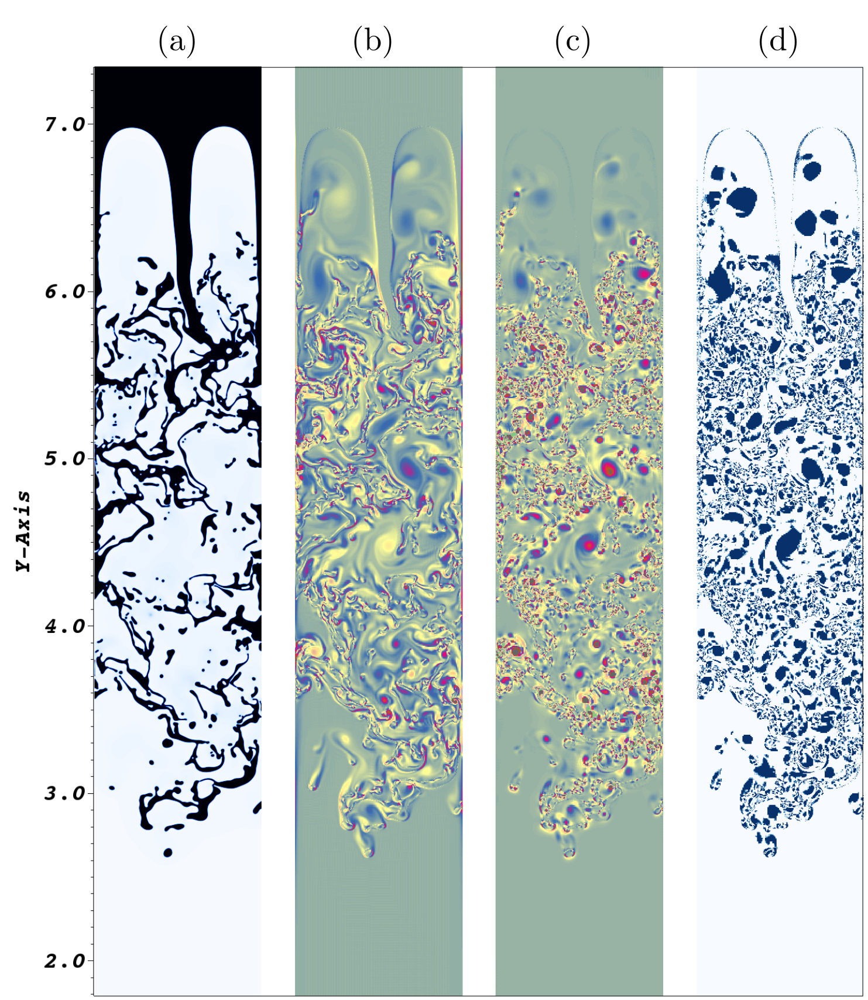
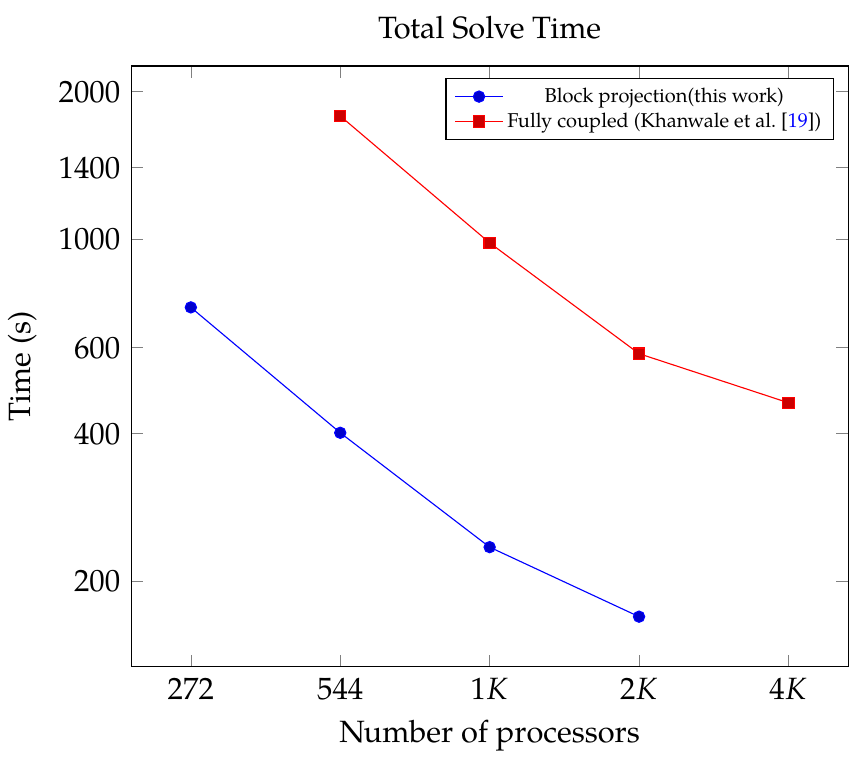

An efficient semi-implicit block second order solver for simulating two-phase flows
Our work on development of block projection semi-implicit schemes which are about 4 times faster than fully coupled schemes while preserving stability features.

In picture above: Progressive zoomed in mesh for Rayleigh Taylor instability in the chaotic turbulent regime for the density ratio of 1:10.
Summary
In this work we present a projection-based framework for solving a thermodynamically-consistent Cahn-Hilliard Navier-Stokes system that models two-phase flows. In this work we extend the fully implicit method presented in Khanwale et al. [A fully-coupled framework for solving Cahn-Hilliard Navier-Stokes equa- tions: Second-order, energy-stable numerical methods on adaptive octree based meshes., Computer Physics Communications, 280 (2022), 108501], to a block iterative hybrid method. We use a projection-based semi-implicit time discretization for the Navier-Stokes and a fully-implicit time discretization for the Cahn-Hilliard equation.
We deploy this approach on a massively parallel numerical implementation using parallel octree-based adaptive meshes. The overall approach allows the use of relatively large time steps with much faster time-to-solve. We present comprehensive numerical experiments showing detailed comparisons with results from the literature for canonical cases, including the single bubble rise and Rayleigh-Taylor instability.
We make the framework called [PROTEUS] in which we implemented this solver open source.
Highlights of the work
- A projection-based framework for solving a thermodynamically-consistent Cahn- Hilliard Navier-Stokes system that models two-phase flows.
- A block iterative, semi-implicit time discretization for the Navier-Stokes and a fully- implicit time discretization for the Cahn-Hilliard equation.
- Variational multiscale approach used to stabilize the decoupled pressure projection and circumvent discrete inf-sup condition.
- Pressure decoupling results in two linear positive semi-definite systems for velocity and pressure, instead of the saddle point system.
- An improved parallel numerical implementation using fast octree-based adaptive meshes is presented.
Some Key results:
Chaotic 2D Rayleigh-Taylor instability
 In the Figure above: Rayleigh-Taylor instability in 2D : turbulent dynamics in Rayleigh Taylor instability for for Atwood number of 0.82 (density ratio of 0.1). (a) Shows the interface; (b) shows vorticity (c) Q-criterion (d) Q-criterion threshold between 1.9 and 2
The figure shows vortex dynamics at long times in RTI. We perform vortex identification using Q- criterion. Figure shows turbulent instability in RTI. Panel (a) shows the complex mixing structure of the interface in RTI in the chaotic regime, panel (b) shows the vorticity in the system after a very long time (4.962), panel (c) shows the Q-criterion at the same time. To identify vortices we threshold the Q-criterion between 1.9 and 2 which is shown in panel (d). It can be clearly seen that a myriad of small scale structures generated near the filaments due to shear instability, and are resolved in our simulation. Note that as this is a 2D case, therefore there is no vortex stretching, instead we have a redistribution of vorticity through the non-linear convection. It is well known that there is a strong inverse cascade in the case of 2D turbulence and small scale structures combine to form large scale vortical structures. Therefore, it is even more important to resolve these near interface vortical structures which eventually feed in energy to the larger scales to correctly capture the large scale mixing in the system. This fine scale resolution has a profound influence on the higher-order statistics of Rayleigh-Taylor instability.
Performance improvement

In the Figure above: Comparison of total solve time presented in this work in comparison to the fully coupled method in our fully coupled method.
The projection method presented in this paper in conjunction with the variational multiscale approach, allows us to construct operators which are elliptic in each block. This allows for a selec- tion of cheaper preconditioners compared to the pressure stabilized approach in pressure coupled methods. Additionally, the block projection approach also allows us to selectively provide implicit treat- ment and decreases cost, e.g. Cahn-Hilliard operators are fully implicit, while the Navier-Stokes operators are now semi-implicit, which linearizes the operator. We can observed that both methods scale well, however the projection method is consistently cheaper than the fully-coupled method (see figure above). We observe a speedup of roughly 2.5 to 4 times with the block projection method.
Publication based on this approach
- Makrand A. Khanwale, Kumar Saurabh, Masado Ishii, Hari Sundar, James A. Rossmanith, and Baskar Ganapathysubramanian. “A projection-based, semi-implicit time-stepping approach for the Cahn-Hilliard Navier-Stokes equations on adaptive octree meshes”. In: Journal of Computational Physics 475 (2023), p. 111874 [ARXIV]|[LINK]